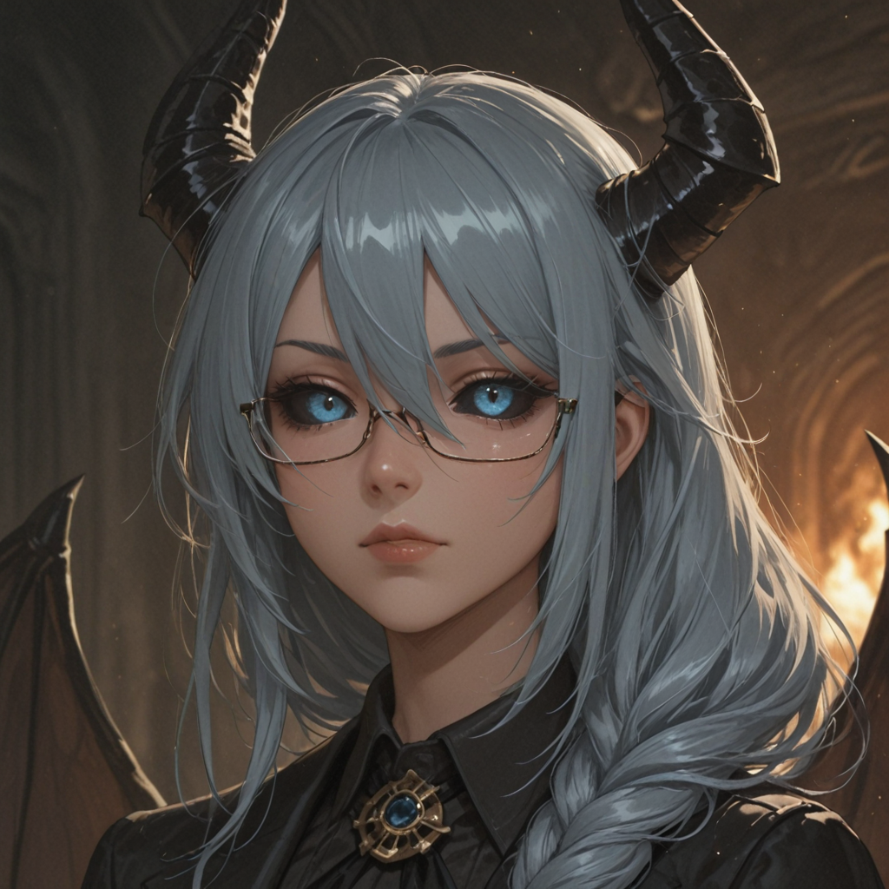
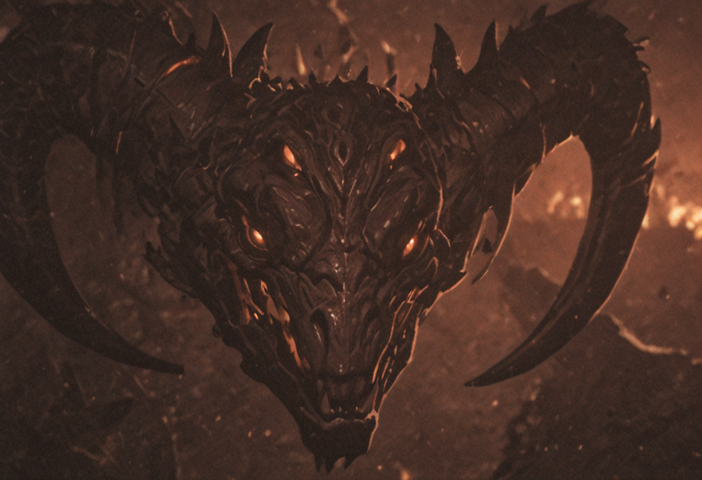
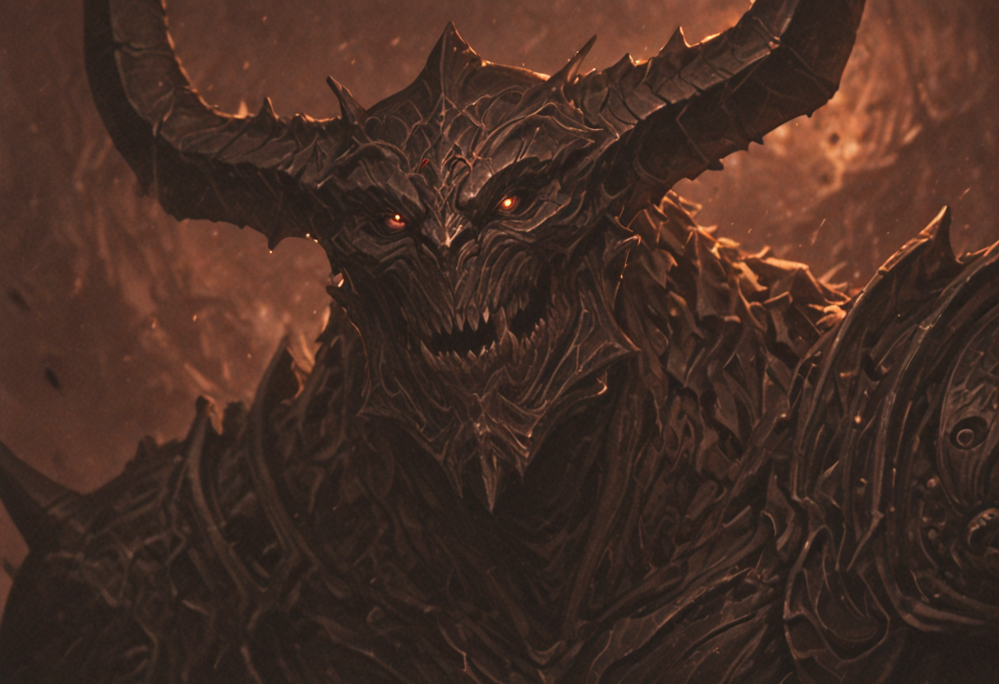
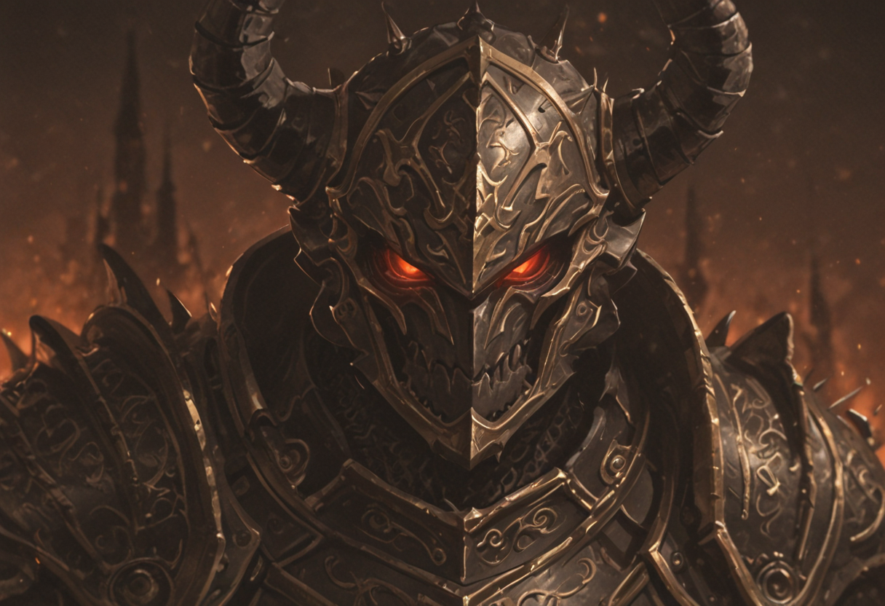
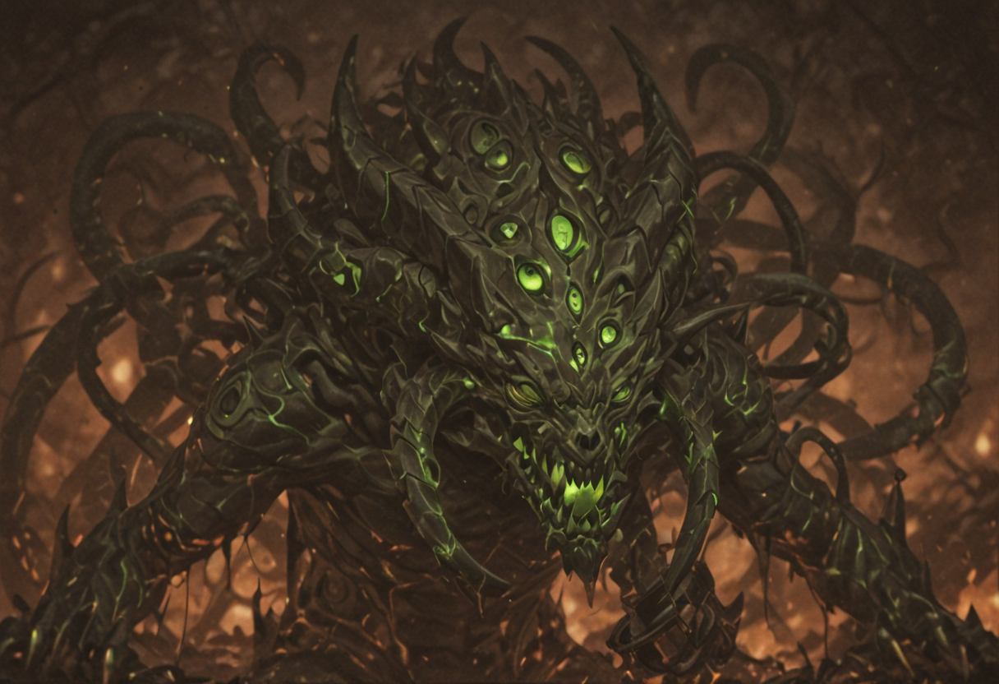
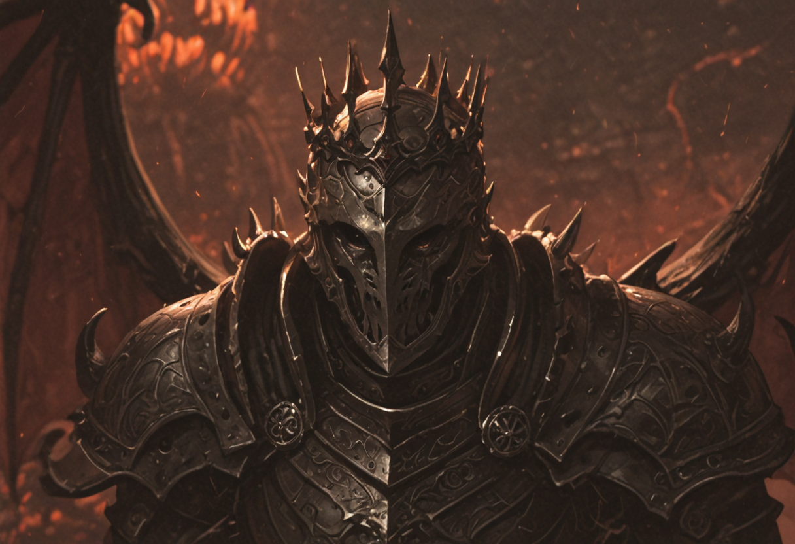
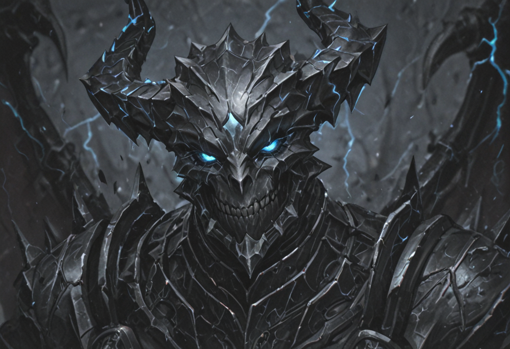
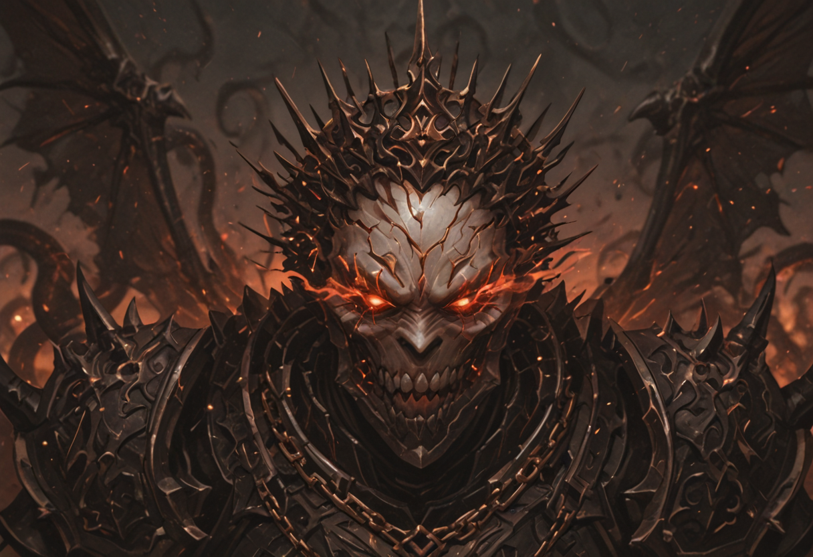

Weapons of Pure Chaos
While the Devils of the Syndicate operate on cold logic and corporate efficiency, Demons are the raw, untamed emotional core of the Abyss. They embody greed, rage, hatred, and entropy. Rather than wasting resources trying to "tame" them, the Syndicate employs specialized officers known as Contractors—masters of the Submission Path—to bind these colossal entities through airtight metaphysical contracts.
Demons are deployed as Heavy Assets (Large Size) to shatter enemy formations. The baseline Demon is a brutal physical combatant, but through battlefield exposure and dark energy investments, they evolve into Greater Demons.
From there, the asset portfolio splits. The natural evolution follows the Physical Path, refining their martial prowess into Demon Lords and eventually Demon Princes. Those repurposed for psychological warfare branch into the Submission Path as Overlords. Alternatively, the Syndicate triggers entropic mutations: the Chaos Path spawns bio-hazardous Chaos Spawns and Dread Lords, while the most volatile are engineered for the Destruction Path, finalizing as impenetrable Heralds of Ruin.
Only the most heavily invested contracts can sustain an Abyssal Tyrant, a Tier V Champion of unparalleled devastation that unites all paths to bring sheer armageddon to the battlefield.
Active Roster

Contractor
Corporate summoners who leverage metaphysical loopholes. They support the frontline by briefly manifesting abyssal horrors—from Cerberus's protection to Cthulhu's maddening gaze—without fully deploying them.

Demon
Hulking monstrosities driven by raw instinct (Large Size). They rely on pure physical strength, shredding infantry with massive claw slashes.

Greater Demon
Elevated abyssal entities (Large Size) that have unlocked innate pyromancy, allowing them to hurl devastating firebolts alongside their brutal melee assaults.

Demon Lord
Highly agile combatants (Large Size) wielding massive swords. They utilize homing firestrikes and possess an uncanny ability to dodge incoming physical attacks.

Chaos Spawn
Entropic horrors (Large Size) lashing out with widespread tentacle assaults. They spew bio-hazardous corruption, poisoning entire enemy groups.

Demon Prince
Apex swordsmen of the Abyss (Large Size). They crush infantry with stunning strikes and incinerate targets with homing inferno blasts.

Overlord
Terrifying entities (Large Size) that assault the psyche. They shatter resolve with mindbreaking strikes, paralyzing foes and drastically slowing enemy reaction times.

Dread Lord
Walking plagues (Large Size) that bypass all resistances. They drown enemy formations in abyssal corruption, returning Dark damage whenever they apply their lethal poisons.

Herald of Ruin
Impenetrable living furnaces (Large Size). They utilize stacks of molten armor to completely nullify direct damage, violently rebuking attackers with explosive fire.

Abyssal Tyrant
An apocalyptic investment (Large Size). Completely immune to debuffs, it paralyzes with its Doom Blade, amplifies suffering, and unleashes absolute Armageddon upon the enemy.